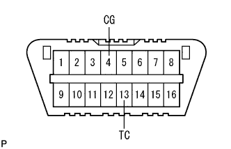

 |
Turn the ignition switch OFF, and using SST (diagnosis check wire No.2), connect terminals 13 (TC) ←→ 4 (CG) of DLC3.
- SST
- 09843-18040
- ■ NOTICE ■
- Never connect the wrong terminals as this will cause a malfunction.
Turn the ignition switch ON, and read the DTCs from the number of blinks of the 4WD warning light.

- □ HINT □
- If normal, the light repeatedly comes on for 0.25 seconds and goes off for 0.25 seconds.
- If there is 1 DTC, the same code is output repeatedly at 4-second intervals; if multiple codes are output, the different codes are output at 2.5-second intervals. After one cycle is complete, the codes are output again after a 4-second interval.
- If multiple code numbers are output, they are displayed in ascending numerical order.
Turn IG OFF.
Disconnect terminals 13 (TC) ←→ 4 (CG) of the DLC3.